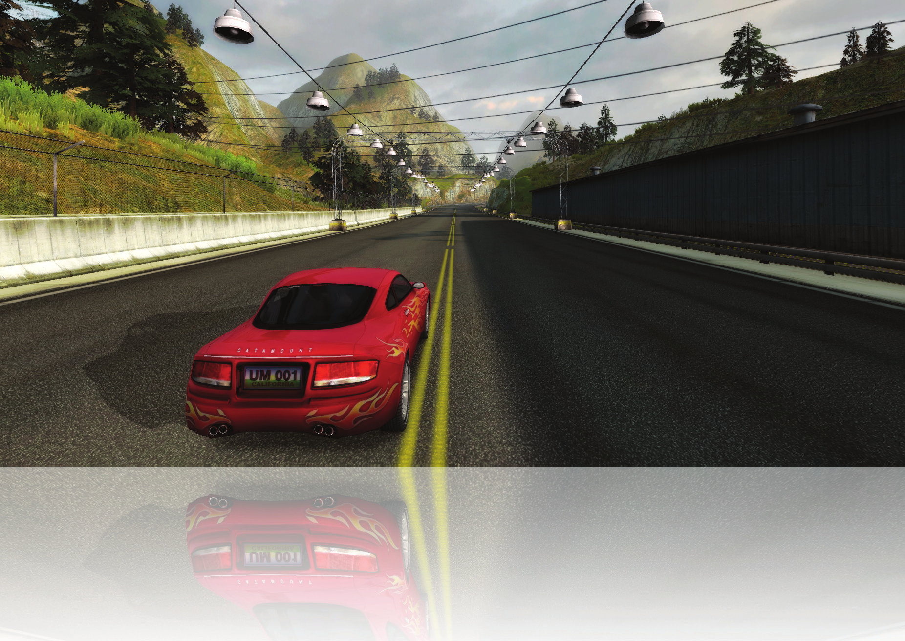
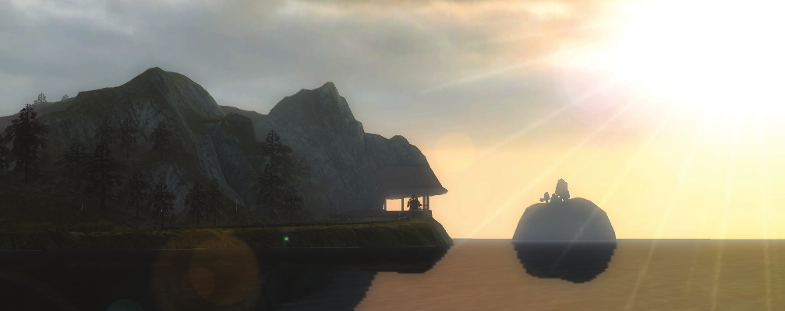
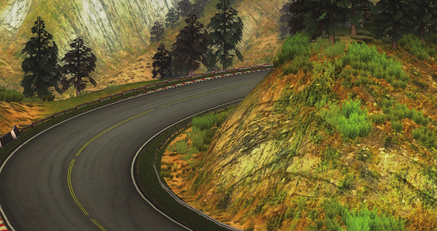
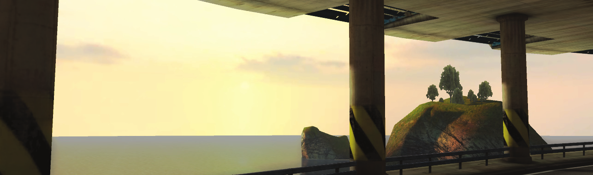
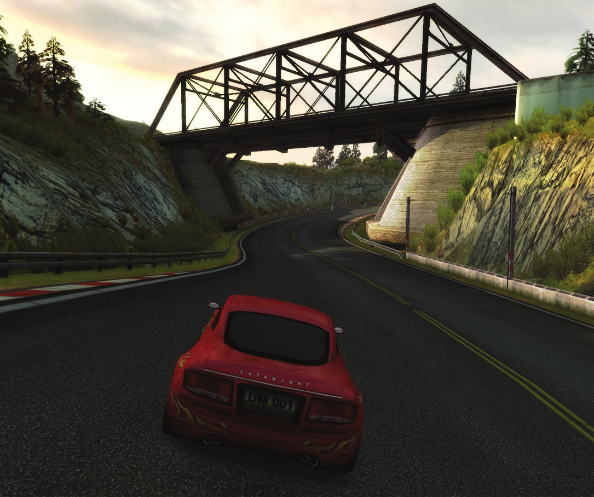
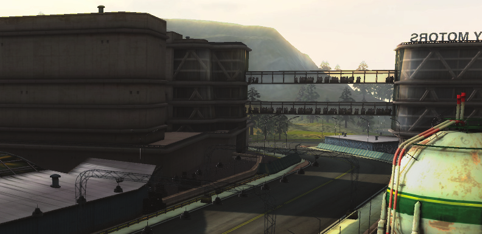
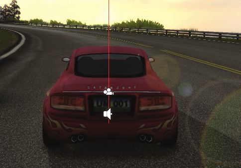
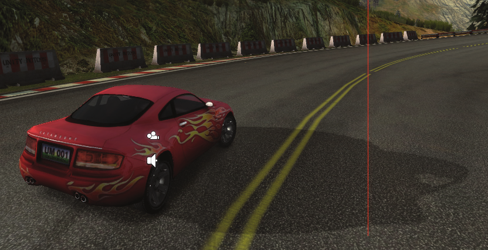
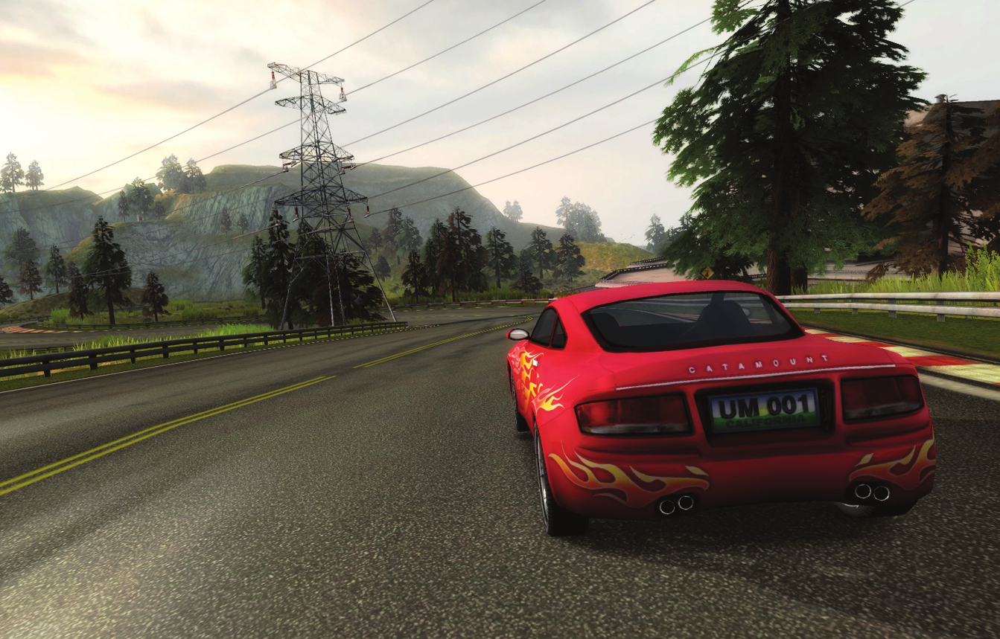
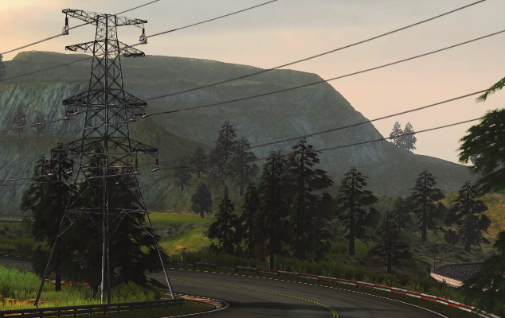

“The Car Tutorial” Part 3
Creating a Racing Game for Unity

Part 3: Under the Hood
We’ve covered how to assemble a working car from a 3d model, scripts and built-in Components. We
have also looked at the exposed variables and how they can be used to tweak the car’s behavior.
Now it’s about time we look more in-depth at the fi ne mechanics inside the engine of the car - The
Car-script.
• Double click on the Car.js script to open it with your code editor.
This script can at fi rst glance be a little intimidating, spanning 500+ lines of codes and comments,
and a lot of variables and functions. Don’t despair though. The script is structured so that we have
relatively small functions with meaningful names, that does exactly what they say they do. Follow-
ing this, the code is not littered with comments that explains everything again - simply because the
code is telling it’s own story.
The way we suggest you to look at it is to fi nd the best entry points and then follow along. In this
case these entry points will be the Start(), Update() and FixedUpdate() functions.
Each of these “main” functions are calling other functions. So when we begin by looking at the
Start() function, we see that the fi rst function called is SetupWheelColliders(). Locate that function
in the code and study what it does, and then go back to Start() and go to the next function which
is SetupCenterOfMass(). By following this code trail you get the overview over what is actually hap-
pening in code, that makes the car work the way it does.
In the following we will look at all those functions. We are not going to explain each line of code,
but we are providing an entry point and going through everything essential that takes place from
the setup to what happens each frame. So without further ado, let us start at the beginning.
Which are the most important things?
Working inside Unity is easy in so many ways, because of stuff like the editor, the drag and drop
workfl ow and all the built in components. Setting up the Car is half-way there - Unity takes care of
importing the model, we get collision, rendering and physics setup for us with just a few clicks to
add the Components.
Inside our script, we are mainly working at manipulating these Components. You will of course
stumble upon a lot of calculations that we use to determine what happens to the car. This is an
unavoidable part of doing real games: You have to setup some logic through for example scripting
when you want to do more than just the basics. But these calculations are just that: Calculations to
get the right values to feed to our Components.
If you feel that the code is overwhelming and don’t know where to start, one approach could be to
focus on the following items, and consider most of what else is going on as something that affects
and supports these items:
• The Rigidbody
• The Wheel Colliders
• The Calculations that we do and the order that we do them in.

Think of it like this:
• By adding the rigidbody to our car model we have a way of controlling it in a physical way. We
do that by calculating the forces that drive it forwards and the forces that slows it down.
• By adding the Wheel Colliders we get control over where the Car meets the road.
Start() - the Setup
This is where we do the initialization needed for the car. The Start() function is executed only once,
in the beginning of the script, before the Update functions. Therefore Start() is often used to set
up the initial prerequisites in the code. The fi rst function we visit is:
SetupWheelColliders()
We have four wheels attached to our car, and we have put them into the FrontWheels and Rear-
Wheels arrays from the Inspector. In this function we create the actual colliders, making the wheels
interact with the surface below the car. We start out in the function by visiting SetupWheelFrictionCurve().
SetupWheelFrictionCurve()
In SetupWheelFrictionCurve() we simply create a new WheelFrictionCurve and assign it the val-
ues that we think are appropriate for our car. A WheelFrictionCurve is used by WheelColliders to
describe friction properties of the wheel tire. If you want to get serious with using Unity’s built in
WheelColliders, stop by the documentation.
SetupWheel()
After setting up the curve, we are back in SetupWheelColliders(), ready to create the actual collid-
ers and Wheel objects. This is done by calling the function SetupWheel() for each of our wheels. If
you look at that function, you will see that it takes two parameters: A Transform and a boolean,
and returns a Wheel object. What we do is, that we feed this function with the transform of each
of our wheel transforms, and stating whether or not this wheel is a front wheel. The function then
creates and returns a Wheel object that we put into our wheels array, which holds all our wheels
for the rest of the script:
for (var t : Transform in frontWheels) {
wheels[wheelCount] = SetupWheel(t, true);
wheelCount++;
}
Inside SetupWheel() it’s actually rather simple what we do: We create a new GameObject and give
it the same position and rotation as the wheel we are currently processing. Then we add a Wheel-
Collider component to that GameObject.
We set the properties of the WheelCollider from the suspension variables that we discussed when
we tweaked the car (the suspension range, spring and damper).
Then we create a new Wheel object and feed it the properties it needs: The collider we created, the
WheelFrictionCurve, the graphics for the wheel (which is the DiscBrake object we dragged to the
inspector when we set up the car) and the graphics for the tire (which is the child of the DiscBrake).
We set the radius of the wheel automatically, based on the size of the tire:
wheel.collider.radius = wheel.tireGraphic.renderer.bounds.size.y / 2;
Finally we check whether the wheel we just created is a front wheel or a rear wheel by looking at
the true or false value that we passed to the SetupWheel(). If it is a rear wheel, we set its drive-
Wheel variable to true, and if it is a front wheel we instead set its steerWheel variable to true.
Later in the code we are making sure that the car can only drive if at least one of the drive wheels
are touching the ground, and only steer if at least one steer wheel is on ground.
Additionally we do a little manoeuvre for the front wheel, by creating an extra game object that
we put in between the frame of the car and the wheel. This is the Steer Column that we use later
when we rotate the wheel when turning. Then we return the created wheel, which gets put into
the wheel array back in SetupWheelColliders() and when we have processed all wheels, we exit the
function and go back to Start().
SetupCenterOfMass()
This is the next function that we visit. This is a very small function, that set the rigidbody’s center of
mass to the CenterOfMass Game Object that we created earlier. If the center of mass has not been
set, the rigidbody will use the default that Unity calculates.
Then we convert the top speed entered in the inspector using a small utility function:
topSpeed = Convert_Miles_Per_Hour_To_Meters_Per_Second(topSpeed);
The function just multiplies the topSpeed variable with the number 0.44704, which translates it to
meters per second. This is setup so that we can input the desired speed in the inspector in miles per
hour. When calculating physics, we operate with meters/second. We also have a small function do-
ing the inverse calculation, which is useful if you for instance want to output the speed of the car
in miles per hour.
SetupGears()
Gears are automatically setup in this function by assigning a top speed to each gear and calculat-
ing how much force is needed to accelerate the car to that given speed at each gear. The force is
calculated using the friction and drag values supplied in the public variables, which means that this
calculation is basically a linear z-axis version of the friction calculation in the update functions. A
factor is multiplied on this force value to ensure that the car will accelerate to a speed higher than
the ones assigned as thresholds for the gears.
SetUpSkidmarks()
This function fi nds the Skidmark game object in the scene and stores a reference to it and to it’s
ParticleEmitter, used for smoke. The code for the skidmarks is not covered in this tutorial, but that
shouldn’t stop you from opening the script and investigate it on your own. At the end of Start() we
assign the x-value of our dragMultiplier array to a variable:
initialDragMultiplierX = dragMultiplier.x;
This is stored because we modify the x variable of the dragMultiplier when we are using the hand-
brake, and then need to go back to the initial value again when we are not hand braking.
That’s it for setting it all up in the Start() function. Now we’ll move on to the main loop of the
script in the Update functions, which is what happens in each frame.
Update()
GetInput()
The fi rst thing we do in each frame is to read the user’s input by calling the function GetInput(). The
fi rst two lines reads the vertical and horizontal axes and stores it in our throttle and steer variables:
throttle = Input.GetAxis(“Vertical”);
steer = Input.GetAxis(“Horizontal”);
The vertical and horizontal axes can be setup in Unity’s Input Manager (Edit -> Project Settings ->
Input). By default the vertical axis is set to the keys ‘w’ and ‘up-arrow’ in the positive direction and
‘s’ and ‘down-arrow’ for the negative direction, and the value that we read here is used to apply
the throttle force later. The horizontal axis is set as the keys ‘a’ and ‘left arrow’ in one direction and
‘d’ and ‘right-arrow’ in the other, used for steering.
CheckHandbrake()
After reading the input for controlling the car, we call the CheckHandbrake() function. This is a
specifi c function that checks if the space key is down, and applies some logic accordingly:
When we initially press space, we set the handbrake variable to true, starts a handbrake timer and
changes the dragMultiplier.x value (making the car handling more shaky, resembling hand braking).
As long as we keep on holding space, nothing more will happen, since the handbrake variable is
now set to true.
When space is not registered as being pressed, the code in the else block will be executed, but only
if handbrake is set to true. This again means that the code will only happen when the user fi rst lets
go of space, because we set the handbrake variable to false inside the block. The coroutine Sto-
pHandbraking() will then be started:
StartCoroutine(StopHandbraking(Mathf.Min(5, Time.time - handbrakeTime)));
StopHandbraking()
StopHandbraking() takes an input variable specifying the number of seconds it should spend on get-
ting the dragMultiplier.x back to it’s initial state. This value is given to it as the minimum of 5 and the
handbrake timer that we started when we began handbraking. The function then spends the speci-
fi ed amount of seconds getting the dragMultiplier.x value back from it’s current value, to the initial
value that we stored at the end of the Start() function, making the car handling normal again.
Check_If_Car_Is_Flipped()
Back in Update we now call the function Check_If_Car_Is_Flipped() to perform the “Turtle-check”.
Inside that function we check the rotation of the car. It’s perfectly valid for the car to be fl ipped
over or twisted in extreme angles, for example if we a crashing or doing some kind of insane stunt,
but we want to eliminate the possibility that the car ends in a position where we can’t drive any-
more. Therefore we check if the rotation is at an angle where the car is not drivable anymore, and
if it is, we add the time since the last frame to the resetTimer variable.
If this value eventually adds up to exceed the value that we have set for resetTime (5 seconds by
default), we call the function FlipCar(). If the rotation of the car is not at a bad angle, we set the
timer back to zero instead.
FlipCar()
In FlipCar() we get the car back on it’s wheels and sets it’s speed to zero, so we can start driving
again from a standstill.
UpdateWheelGraphics()
This is the longest and most complicated function that is called from Update(). Fortunately there is a
large middle section that just deals with the placement of skidmarks, which we are not getting into.
The important part in regards to the wheels is to update their position and rotation in this function.
For each wheel we start by checking if it is touching the ground or not. If it is, we set the position
of the wheel graphics to the position of the point where it hits the ground, but moved upwards
a distance equal to the radius of the wheel. This will move the center of the wheel to the correct
position in relation to the car’s chassis.
w.wheelGraphic.localPosition = wheel.transform.up *
(wheelRadius + wheel.transform.InverseTransformPoint(wh.point).y);
After positioning the wheel we get the velocity of the rigidbody at the point of ground impact,
translate it to local space for the wheel and store this in the wheel object.
w.wheelVelo = rigidbody.GetPointVelocity(wh.point);
w.groundSpeed = w.wheelGraphic.InverseTransformDirection(w.wheelVelo);
If the wheel we are currently processing is not touching the ground, we set the position of the
wheel based on its parent wheels transform and the range of the suspension.
Then we apply rotation to the wheel. If it is a steer wheel, we start by applying the rotation that
visualizes steering. This is done by rotating the Steer Column Game Object that we created for the
steer wheels earlier. We rotate it by a factor of how much we are turning the wheel (the steering
variable that we set based on user input) multiplied with the maximum turn angle we have set up.
Since the Steer Column is a parent to the wheel graphics, the wheel will turn with the steer column.
For all wheels we then apply the rotation that visualizes speed, by rotating the wheel in its forward
direction based on speed and the radius of the wheel:
w.tireGraphic.Rotate( Vector3.right * (w.groundSpeed.z / wheelRadius) *
Time.deltaTime * Mathf.Rad2Deg);
UpdateGear()
The last function we call from Update() is UpdateGear(), which is a small function that evaluates
what gear the car is currently in by looking at the speed compared to the speed values we set for
each gear back in SetupGears() that we called from Start().
This is in fact everything that happens each frame in the Update() function - not that complicated,
right? The fi nal section we need to look at is the rest of the main loop, namely the physics calcula-
tions that take place inside FixedUpdate().
FixedUpdate() - All your physics are belong to me
When dealing with physics, it is critical to keep the calculations and operations under strict control,
to make sure that the result is smooth and fl uent. FixedUpdate is created for that purpose. It is en-
sured to be executed at fi xed time intervals. The documentation describing Update Order will tell
you this about FixedUpdate(): “It can be called multiple times per frame, if frame rate is low; and
it can be not called between frames at all if frame rate is high. All Physics calculations and updates
occur immediately before FixedUpdate().”
We have a number of functions executed from within FixedUpdate() and all of them are concerned
with calculating and applying forces to the car.
UpdateDrag()
The fi rst one we visit is UpdateDrag(). Drag is the air resistance that affects the car when it is mov-
ing, meaning that this is a force that affects the car in the opposite direction of where it’s going,
slowing it down.

We are building the drag based on the squared velocity of the car:
Vector3( -relativeVelocity.x * Mathf.Abs(relativeVelocity.x),
-relativeVelocity.y * Mathf.Abs(relativeVelocity.y),
-relativeVelocity.z * Mathf.Abs(relativeVelocity.z) );
This means that with increasing velocity the drag increases even more. Squaring the velocity when
calculating drag is based on the actual drag formula used in physics.
Then the relativeDrag is scaled with the dragMultiplier we already looked at, to take into account
that the car’s profi le looks very different from the front, sides and top.
If we are hand braking we apply extra forces to the sideways and forwards values of the drag,
based on how fast the car is going, and how the car is facing relative to it’s velocity. Notice how we
use the dot product between the velocity and the forward direction of the car to calculate extra
drag in the cars forward direction. This equation results in extra drag in the forwards direction
when the car is facing forwards (braking more) and less when it is facing more sideways (sliding).
For the x drag value the same goes: The more the car is sliding sideways, the more we increase the
x drag value, to slow down the car instead of letting it slide forever.
If we are not hand braking we only update the x value:
drag.x *= topSpeed / relativeVelocity.magnitude;
This is once again something that is simply done to make the car drive nicer - we increase the side-
ways drag value the slower we are going to avoid the car sliding too much on the road when turning.
In the end of the function we apply the force to the rigidbody:
rigidbody.AddForce(transform.TransformDirection(drag) * rigidbody.mass * Time.deltaTime);
Since the drag force is opposite to the velocity, we apply it to the rigidbody in it’s transform direc-
tion, resulting in slowing the car down.
UpdateFriction()
This function takes care of applying the friction that is between the wheels and the surface they
are on. In that regard it is very straightforward, since we are using the WheelFrictionCurve that we
set up in the beginning. The wheel friction curve gives a force as output, based on the measure of
tire slip that we gave it as input. This force is separated into two directions: the forward friction
(responsible for acceleration and braking) and the sideways friction (responsible for keeping the car
oriented). When we assign the wheel friction curve, this takes care of updating the friction be-
tween wheel and surface for us:
w.collider.sidewaysFriction = wfc;
w.collider.forwardFriction = wfc;
We are doing one thing before that, which is changing the sideways friction force based on how
fast the car is going in the sideways direction. This is done to avoid that the car starts sliding side-
ways on the surface when the car is rotated in a turn.
CalculateEnginePower()
Calculating the engine power that we later use to apply force to the rigidbody is relatively straight-
forward but has a few quirks.
• If we are not throttling we simply decrease the engine power over time making the car slow down.
• If we are throttling in the same direction as the car is currently going (which we check with the
HaveSameSign() function) we calculate a value to add to the engine force. What goes on might
seem a bit weird: We calculate a norm power that is the product of the current engine power
divided with the maximum engine power (yielding a result between 0 and 1) and then multi-
plying by 2. The result will be between 0 (when we are going the slowest) and 2 (when we are
going at max power).
Then we call the utility function EvaluateNormPower(). This function looks at the passed value
and returns a number between 1 an 10 if norm power is between 0 and 1. If norm power is
between 1 and 2 the function will return a value between 0 and 1. Confused? The number gets
used in the equation that adds force to the engine:
currentEnginePower += Time.deltaTime * 200 * EvaluateNormPower(normPower);
The net result is that we add more force when we press the speeder and the car is going slow, to
accelerate. Eventually, when the car reaches its top speed, no extra force is going to be added to
the engine power which keeps it at a constant speed.
• If we are instead throttling in the opposite direction, it is equivalent to braking. In this case we
also deduct engine force over time, only a little more than when not throttling.
Finally the calculated engine force gets clamped between the force value for the current gear
and the previous gear to avoid the possibility of calculating a sudden change in value that is too
high or low.
CalculateState()
This is a small function that we call now because we need to know if the car’s drive wheels and
steer wheels are on the ground in the functions that follow. What it does is very simple:
• We set the variables canDrive and canSteer to false by default.
• Then we check each wheel in our wheels array to see if it is touching the ground:
if(w.collider.isGrounded)
If it is on the ground, we check what type of wheel it is. If it is a drive wheel, canDrive is set to true.
If it is a steerWheel, canSteer is set to true.
What this adds up to after this function has done its work is that if at least one drive wheel (which
we set up as the rear wheels) is touching the ground, we can drive. If at least one steer wheel (the
front wheels) is touching the ground, we can steer.

We are now down to the last two functions, which are the ones that actually applies our calculations
to the rigidbody of the car. We are going into slightly more detail here to leave you with a good idea
of the logic and calculations that end up making the car drive and steer. The fi rst function is:
ApplyThrottle()
We only do something in this function if the CalculateState() function set the variable canDrive to
true (meaning that at least one drive wheel is on the road).
If we can drive, we start by comparing the
throttle variable that is the user input we
read with the relativeVelocity.z variable
which was the velocity in the cars forward
direction.
If these values have the same sign - deter-
mined by the HaveSameSign() utility func-
tion - it means that we are throttling in the
same direction as the car is going and in this
case we are adding a throttle force to the
rigidbody:
throttleForce = Mathf.Sign(throttle) * currentEnginePower * rigidbody.mass;
If throttle is negative (the user is pressing the brake button), the sign will be -1 and we will calcu-
late a negative throttleForce that we add to the car which we also know has a negative velocity.
Hence we will throttle faster backwards. The opposite is the case where the user is pressing the
speeder button. Then we are adding a forwards throttleForce to a car that is already going for-
wards, making it go faster forwards.
If relativeVelocity.z and throttle have different signs on the other hand, then it must mean that we
adding throttle in the opposite direction of the direction that the car is currently going. We are in
other words braking or slowing down. We do that by setting the brakeForce variable based on the
mass of the car and the force of the engine’s fi rst gear:
brakeForce = Mathf.Sign(throttle) * engineForceValues[0] * rigidbody.mass;
Again we use the sign of the throttle because we know that throttle in this case has the opposite
sign of the velocity, resulting in that we calculate a force opposite to where we are going.
When we are done determining whether the car should speed up or slow down, we apply the cal-
culated forces to the rigidbody’s forward direction:
rigidbody.AddForce(transform.forward * Time.deltaTime * (throttleForce + brakeForce));

ApplySteering()
Unless you are creating a drag racing game where you are trying to set the world speed record on a
straight section, steering is as important as throttling, so lets wrap it up by applying the steering. We
did not apply any throttle force if no drive wheels were touching the ground, and the same goes for
this function where we do not apply any steering if no steer wheels are touching the ground.
In the beginning of the function we calculate a variable named turnRadius, based on the input.
The equation makes the turnRadius increase when you are turning to either side. We calculate a
minMaxTurn value by visiting the EvaluateSpeedToTurn() function.
EvaluateSpeedToTurn()
This function returns a turn value depending on how fast the car is going, as explained when we
looked into tweaking the car. The faster the car is going, the closer this value will get to minimum-
Turn, making it harder to turn when going fast.
Back in ApplySteering(), the turnSpeed we calculate directly relates to the turnRadius and the car’s
forward velocity. The bigger the radius is, the smaller the angle we turn each frame because the circle
we turn in is bigger.


Then we rotate the car:
transform.RotateAround( transform.position + transform.right * turnRadius * steer,
transform.up,
turnSpeed * Mathf.Rad2Deg * Time.deltaTime * steer );
The RotateAround() function rotates a transform around a specifi ed point and axis, and takes an
angle which is the amount it turns.
• The point we turn around is the exact middle of the car when we are not turning at all. When we
start pressing the buttons to steer, the point moves away from the car, to the side it is turning.
Remember that the steer variable was retrieved from the horizontal input axis which is negative
when we turn left and positive when we turn right. turnRadius and steer both grow bigger the
more we turn. When we multiply them with the vector transform.right, we get a point that is
based in the car’s center and moved to the steering side, as shown in the following pictures:
• The axis we turn around is the y-axis (up), meaning that we rotate the car in the x-z plane - we
rotate the car around the line shown in the pictures.
• The angle is then based on the turnSpeed we just calculated, multiplied with steer to get the
left/right direction.
Now we are going inside:
if(initialDragMultiplierX > dragMultiplier.x)
Which we recognize as being true when we are hand braking. In there we check whether or not we
are steering while handbraking.
If we are not steering, we check if the car is currently in the process of turning by looking at the
angularVelocity.y value of the rigidbody.
If this value is zero or very low, we are not turning, or turning very little and then we apply a ran-
dom value to the rotation direction. This will simulate the shakiness of the car when handbraking
and going straight ahead.
If the value is not very low, we instead apply the actual angularVelocity.y value to the rotation
direction. If we are in fact steering, rotation direction will be -1 when going left and 1 when going
right (because rotation direction by default is set to the Sign of steer.

When the extra hand brake rotation direction has been established, we apply the rotation to the
car, but this time around another point:
frontWheels[0].localPosition + frontWheels[1].localPosition) * 0.5
This point is between the two front wheels and when the car rotates around it the result will be
that it’s rear end moves to the rotation side while the front end keeps its position - allowing the car
to slide in a cool way when you pull the handbrake at high speed while turning.
Now the circle is complete and the Update() and LateUpdate() functions will run all over from the
top in the next loop. Only next time the input values will be different because of player input and
road conditions, and we will get different forces calculated, creating the experience of driving a
real car.
And that wraps it up. Hopefully you’ve enjoyed putting a car together, playing with it’s variables
and looked inside the code with us.
If you want more, we have one fi nal section for you. We have also included a real physics model for
your viewing/driving pleasure. But this time you are on your own.
Real Physics Model
At the very bottom of the Project view you will fi nd a folder named ~AlternatePhysicsModel. This
folder contains some scripts and sample Prefabs to simulate realistic car physics in Unity. The simu-
lation presented here does not make use of Unity’s wheel colliders, but instead implements its own
wheel collider in script based on Physics.Raycast. The script then uses a Pacejka “Magic Formula”-
based tire model to calculate wheel forces to apply to the car, which gives better results.
Chances are, you don’t need to know about the internal workings of the physics model. If you
just want to play around with it, the best approach is to take the example prefabs, and start
tweaking values, and see what happens. If you open the scripts, you’ll see that all parameters are
explained in the comments. Try tweaking values a little at a time to get a feeling for it.
The included Prefabs
The folder contains fi ve car Prefabs, and the skidmarks Prefabs. To try it, just drag one of the cars
and the skidmarks Prefab into the scene (of course, the skidmarks Prefab is probably already in
the scene). You should now be able to drive around the scene with the car using the arrow keys.
There are four realistic cars with very different characteristics included, to let you experiment with
different physics setups, and one sports car with a more arcade-style setup (unrealistic high grip).
All the car artwork used here are free models downloaded from the Internet for demonstration
purposes, and not actually well suited for use in games.
The scripts are all based on realistic laws of physics, with the exception of the TractionHelper
script, which is designed to make fi shtailing cars more controllable with digital inputs. It acts
somewhat similar to how real-life ESP systems do.
The included scripts
AerodynamicResistance.cs: One copy of this script should be added to each car to calculate the car’s
aerodynamic friction.
AntiRollBar.cs: Optionally add up to one of these per axle to simulate anti-roll-bars for better handling.
CarController.cs: The script to handle car input. One of these is needed for each car. Edit this script,
if you want to change how the car is controlled, or implement AI or network controlled cars. Also
sets up some characteristics of the cars chassis, such as center of gravity and inertia.
Drivetrain.cs: A car’s engine and drive train. This is where you set up gear box and engine specs.
One of these is needed per car.
Skidmarks.cs: Global skidmarks manager. Add one Skidmarks prefab to your scene, which uses this
class to render and manage skidmarks for all cars.
SoundController.cs: Simple class to play engine and skid sounds. One of these should be added per car.
TractionHelper.cs: Optionally add one instance of this per car, to make the car more stable.
Wheel.cs: This simulates the tire traction and wheel suspension model, and acts as a replacement
for Unity’s built-in Wheel Collider.
Wing.cs: Add one or more of these if you want to simulate lift or downforce aerodynamics for your car.
